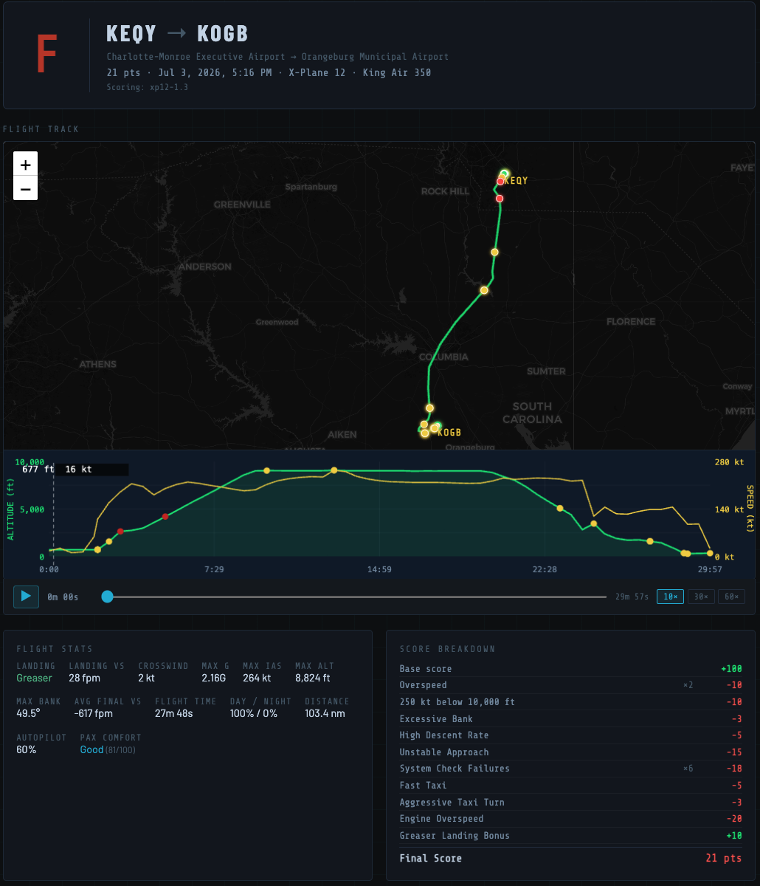
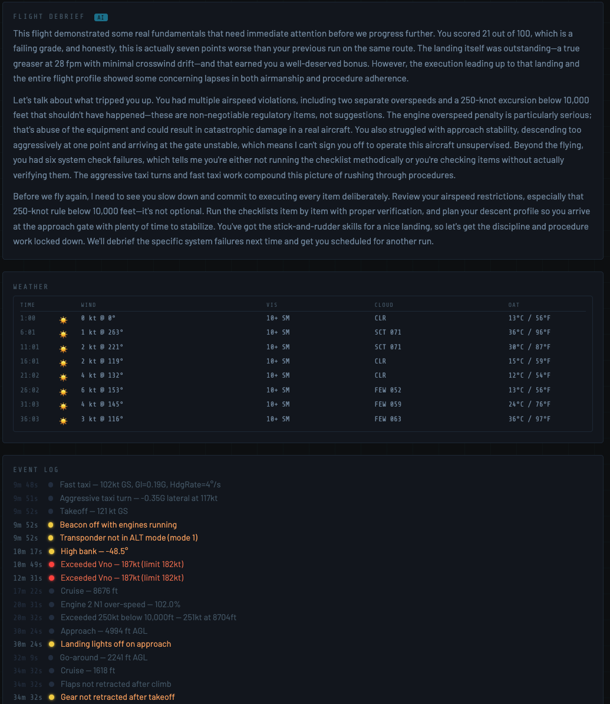
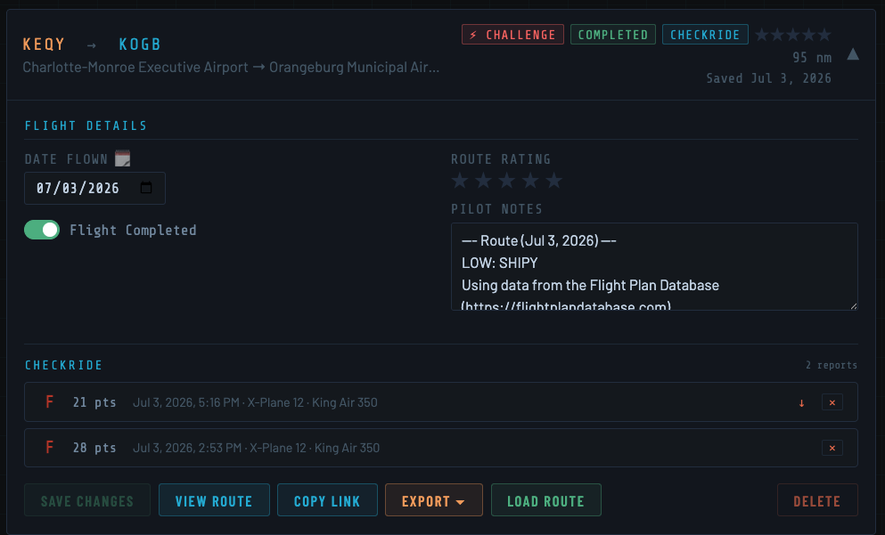

A free Windows companion app that grades your X-Plane flights on speed discipline, landing quality, airmanship, and system procedure — then writes you an AI debrief. Think of it as gamification for your sim flying, built around the same standards a real CFI would apply.
Requires SimLetsFly account · X-Plane 12 · Windows 10/11
Open CheckRide, sign in with your SimLetsFly account, and pick which flight you're flying. No sim plugins, no config files — it connects directly to X-Plane 12's built-in REST API.
Download the Windows app, sign in with your SimLetsFly account, and pick the flight card you're about to fly. That's the only setup.
Hit Record and fly. CheckRide monitors speed, G-forces, bank angle, systems, and approach stability in the background — no interference with your sim.
Set the parking brake. CheckRide scores your flight and uploads the report automatically — score, breakdown, event log, flight track, and an AI-written debrief, all in your browser.
Shareable public reports with interactive flight track, altitude and speed chart, full event log, and AI debrief. Fly the same route multiple times and watch your scores improve.



Starts at 100. Every deviation costs points. Bonus points for exceptional landings. The score reflects how the flight was flown — not just where you went.
Vertical speed at touchdown, crosswind component, side-load. Greasers are rewarded — hard landings cost you.
Overspeed events, 250-knot restriction below 10,000 ft, excessive approach speed. Every infraction is logged with a timestamp.
G-forces, bank angles, descent rates, unstable approaches. Fly like a professional or the score will reflect it.
Gear position, flap config, landing lights, strobes, transponder, pitot heat — checked against the phase of flight, not a static checklist.
Autopilot reliance, max altitude, distance flown, day vs. night hours — a full picture of how the flight was conducted.
Wind, visibility, cloud layers, and OAT sampled every five minutes and attached to your report for full context.
Scores run from 0 to 100. The grade reflects the full flight — speed, systems, airmanship, and landing. Not just the touchdown. CheckRide isn't a substitute for real-world training, but it applies the same standards a CFI would — making it a genuinely useful study companion alongside your actual lessons.
After each flight, CheckRide generates a written debrief specific to your penalties, your landing, and how you compared to your last run. No generic feedback — it references your actual events.
The landing itself was the bright spot — a greaser at 28 fpm with clean crosswind control shows solid stick-and-rudder fundamentals. Unfortunately, the three overspeed events in cruise and the 250-knot bust below 10,000 ft tell a different story about energy management. The engine overspeed alone cost 20 points, and it suggests you weren't actively monitoring the speed envelope during descent setup.
The six system check failures are equally concerning. Whether it's rushing through or simply skipping verification steps, those aren't optional in a professional operation. Commit to a flow before each phase transition and the score will reflect it. Score improved 8 points over your previous run — the unstable approach from last time was clean this time, which is the right direction.
Next time: slow down your scan rate, brief every altitude restriction before you reach it, and commit to a stabilized approach gate by 500 feet AGL. The stick-and-rudder skills are there — nail the discipline and you'll be looking at a B.
This is a very early alpha/beta release — expect rough edges and things that don't work perfectly yet. That said, it's flyable and your feedback is genuinely helpful. No install required: download the zip, extract the .exe anywhere you like, and sign in with your SimLetsFly account.
New releases are going out frequently right now — if it's been a few days since you downloaded, check back for a newer version before your next flight.
Free · X-Plane 12 required · Windows 10/11 · Mac support planned
Found a bug or have feedback? Email support@simletsfly.com — it's appreciated.
When reporting an issue, please attach the .log and .json files from the flight. You'll find them in the same folder as CheckRide.exe.
Seeing "This version of CheckRide is out of date"? Occasionally we have to lock out older versions — usually because a scoring change or a database schema update makes an old client incompatible with the current system. When that happens, just download the latest version from this page, replace your existing CheckRide.exe with it, and relaunch. That's it — no reinstall, no reconfiguring, your sign-in and flight list pick up right where you left off.
CheckRide is designed to be straightforward about what it does and does not do.
CheckRide is provided free of charge as experimental software in early development. It is offered as-is, without warranty of any kind — express or implied — including but not limited to accuracy of scoring, fitness for any particular purpose, or uninterrupted operation. Use of this software is entirely at your own risk. SimLetsFly accepts no liability for any loss or damage arising from its use. CheckRide is a simulator companion tool intended for entertainment and practice only — it is not a substitute for real flight training, certified instruction, or any official aviation assessment.